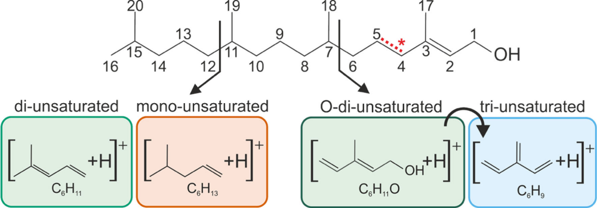
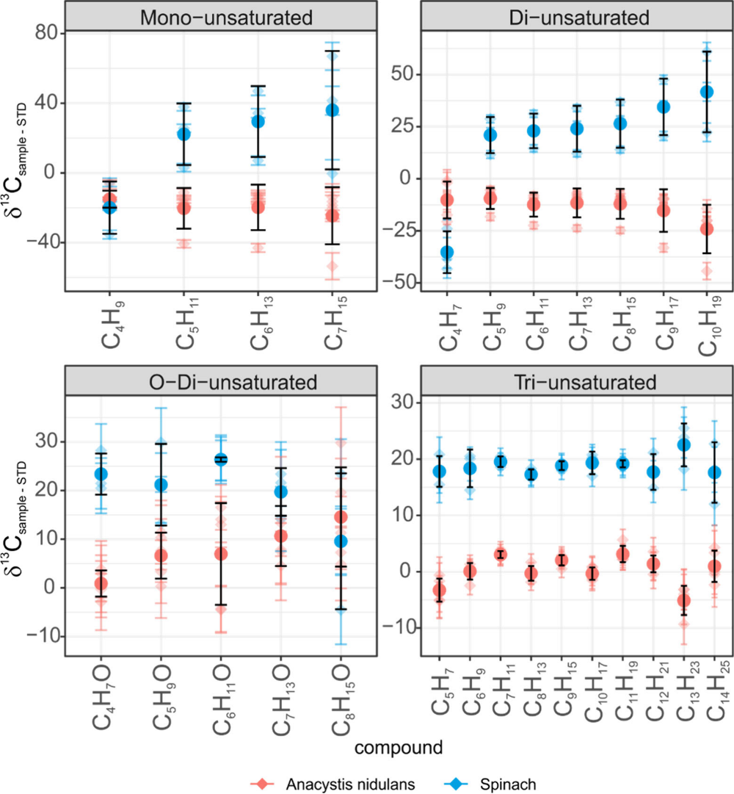

Isotope Fingerprinting of Phytol by LC-Orbitrap MS
A validated method and theoretical framework to measure 13C in 26 fragments of a lipid at once
Overview
Phytol, the side chain of chlorophyll, is the precursor of sedimentary phytane and one of the most abundant isoprenoids on Earth. In this chapter I developed and validated an Orbitrap method that measures the carbon isotope composition of many phytol fragments simultaneously, together with the theory needed to interpret the data.
Methods
Phytol is introduced by liquid chromatography and ionized by atmospheric pressure chemical ionization (APCI). The singly substituted (M+1) ion of the molecule is isolated in the quadrupole and fragmented by higher energy collisional dissociation (HCD), and the Orbitrap resolves the 13C and 2H substituted isotopologues of each fragment. I derived equations that link observed ion counts to isotope ratios, quantified the contribution of deuterium to each fragment, and built an open R workflow that filters scans, propagates errors and compares precision to the shot noise limit.
Key results
- Simultaneous isotope ratios for 26 fragment ions with an analytical precision of about 3‰.
- Less than 1.2 µg of phytol and a 45 minute acquisition per measurement.
- Fragments group into four structural series, which makes the patterns interpretable without position specific reference standards.
- Phytol from a cyanobacterium and from spinach shows systematic, reproducible differences in fragment δ13C values, a first sign of intramolecular heterogeneity linked to biosynthetic origin.
Impact
This is the first Orbitrap method for intramolecular 13C patterns in a long chain apolar lipid at natural abundance. The approach works at amounts found in environmental samples, needs no specially characterised standards, and is shared openly so others can reuse it. It is the analytical backbone of Chapters 4 to 6.
Figures


